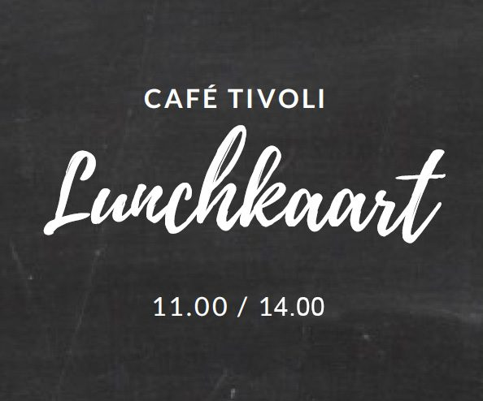
Lunch
Luxe boterhammen, uitsmijters, tosti's, soep en salades. Van 11.00 tot 14.00 uur.
Bekijk de kaart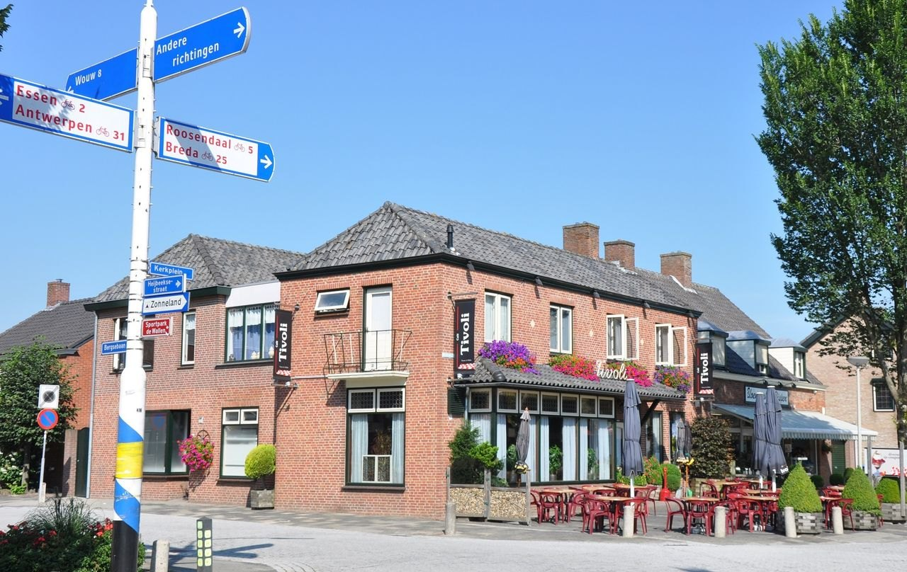
Dorpscafé met groot terras op het Kerkplein in Nispen. Voor een schuimend biertje, koffie met gebak, een ijscoupe of een lekkere lunch.
Zeer gezellige en vlotte bediening en de locatie is top.Ron Noordeloos, via Google
Van een uitsmijter tussen de middag tot een trappist op het terras. Klik op een kaart om alles te zien.

Luxe boterhammen, uitsmijters, tosti's, soep en salades. Van 11.00 tot 14.00 uur.
Bekijk de kaart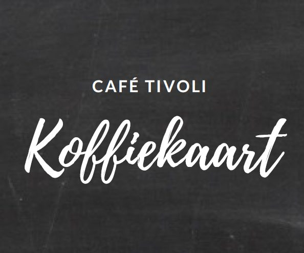
Koffie, thee, warme chocolademelk en verwenkoffie. Met vers gebak: op is op!
Bekijk de kaart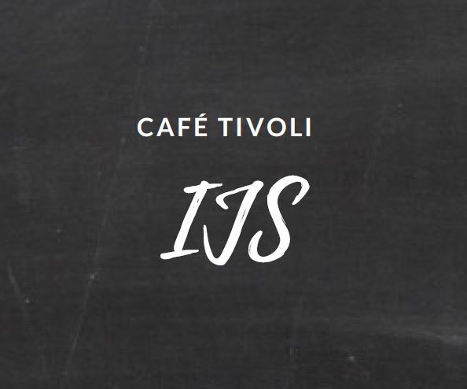
Ruim dertig ijscoupes, van Dame Blanche tot Dubai. Ook voor een hoorntje of cupje.
Bekijk de kaart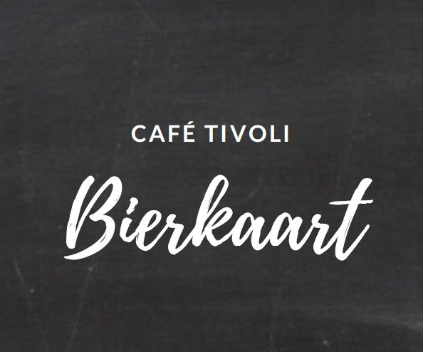
Van pils en witbier tot tripel, quadrupel en trappist. En een flinke rij 0.0.
Bekijk de kaartWat maakt een fietstocht leuk? Natuurlijk, het afstappen! Ons café en terras zijn een vaste pleisterplaats voor fietsers en wandelaars. Na een mooie tocht een koud biertje of een ijscoupe in de zon, of plan uw route zo dat u bij ons luncht.
Tivoli is ook het VVV-i-punt van Nispen. In onze displays vindt u gratis folders en krantjes, en we helpen u graag op weg.
Vlak bij de start van de fiets- en wandelroutes. Vraag gerust naar onze routes.
Regent het? Binnen is het minstens zo gezellig, met een kop koffie en een stuk appeltaart.
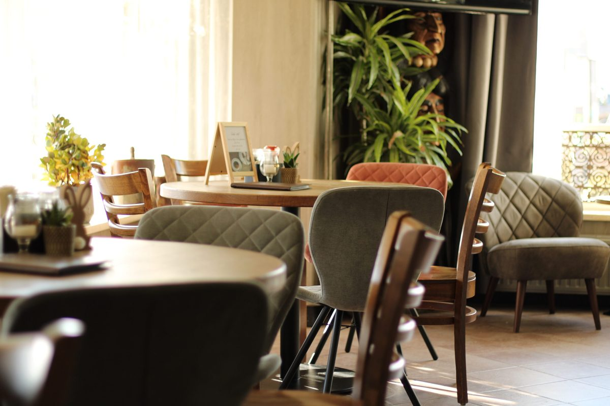
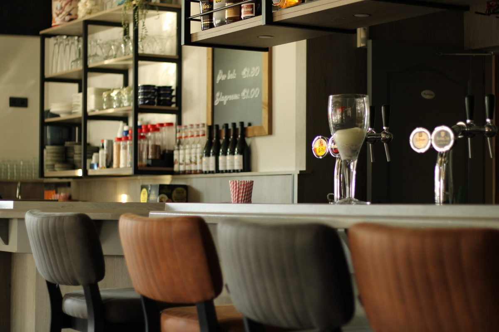
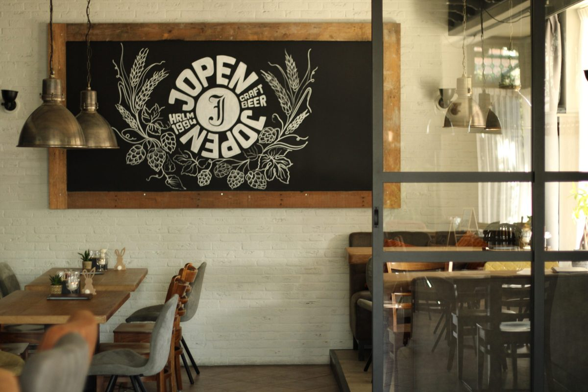
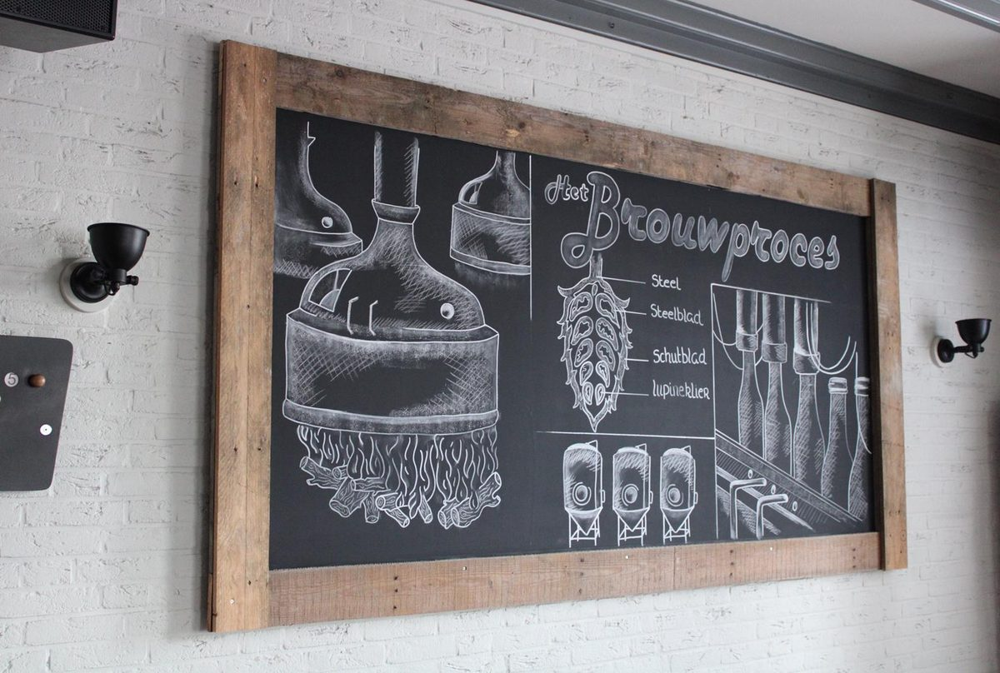
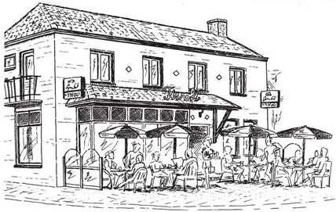
Zo'n 34 jaar geleden besloten we samen met familie het café op het kerkplein uit te baten. Twee jaar later stapten Twan en Hilde in het huwelijksbootje, en sindsdien staan ze samen voor de gasten van Tivoli klaar. Nog altijd heten ze u samen met hun team van harte welkom.
"En ik hoop dat ook u bij uw vertrek, net zoals ik, zal denken: Café TIVOLI, I LOV IT! Proost!"Hilde
Een vraag, of gewoon voor de gezelligheid? Bel of mail ons gerust.
* Van 1 oktober tot 1 april zijn we op maandag ook gesloten.
Bellen of een filmpje kijken? Graag aan uw oor of met oortjes, zodat niet iedereen hoeft te horen hoe het met de aambeien van de buurman gaat.
Honden zijn zeker welkom, maar onze viervoetige vrienden horen op de grond en niet op een stoel.
We zoeken toppers in de bediening. Ervaring is mooi meegenomen, maar geen must. Last van een stilzitallergie? Kom een gesprekje doen met Twan en Hilde.
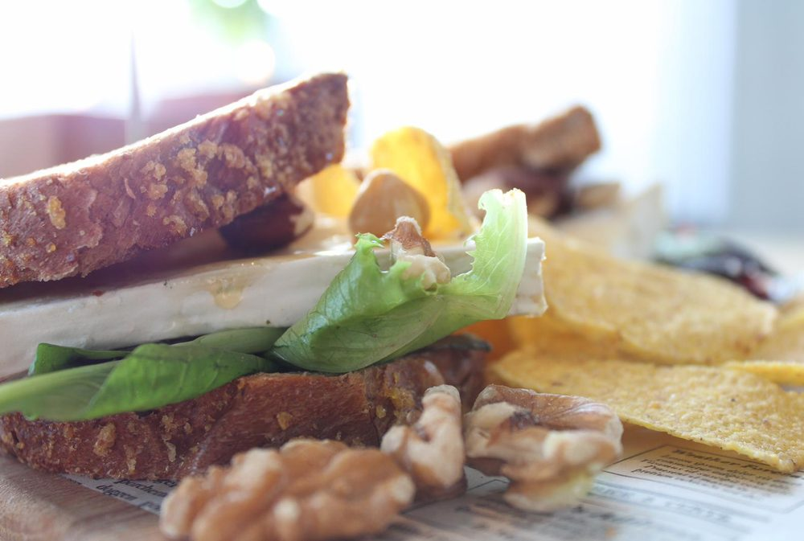
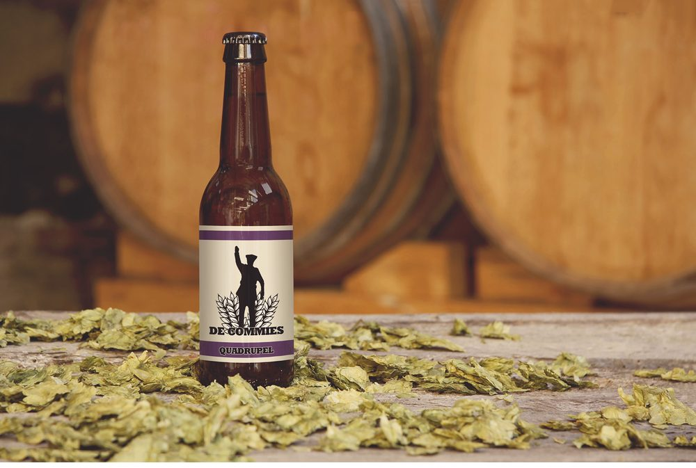